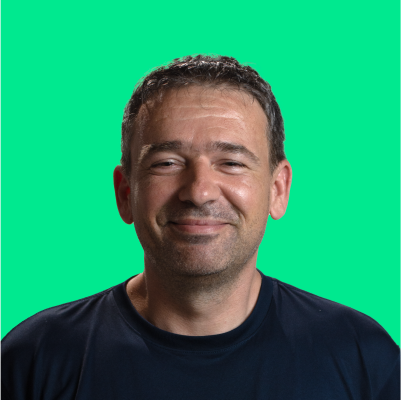

Despre noi
Suntem o companie mică, din Cluj-Napoca — o echipă unde vorbiți direct cu noi. Ne pasă de drumuri sigure, de grupuri care ajung la timp și de clienți care pleacă mulțumiți.
În spatele site-ului și al microbuzului sunt oameni care înțeleg și excursiile spontane, și planificarea pentru nunți sau team building-uri. Vă răspundem la telefon și pe WhatsApp, explicăm clar tariful și condițiile, și ne străduim să fie totul simplu de la primul mesaj până la predarea vehiculului.
Microbuzul 8+1
Serviciul principal al acestui site este închirierea microbuzului Ford Transit 8+1 (fără șofer), din Cluj-Napoca — ideal pentru evenimente, excursii și deplasări de grup. Detalii despre vehicul, tarife și pașii de închiriere găsiți pe pagina principală, la tarife și la cum închiriezi.
Mai închiriem și biciclete & corturi „pe mașină”
Pe lângă microbuz, oferim spre închiriere și biciclete, precum și corturi de plafon (cort rooftop / cort pe mașină) — utile pentru weekend-uri în natură, ture scurte sau călătorii când vreți să dormiți sus, deasupra mașinii.
Stocul și perioadele disponibile se schimbă; pentru modele, date și preț, scrieți-ne pe WhatsApp sau sunați la 0746 063 301 — vă spunem imediat ce putem pune la dispoziție.
Echipa
Ne prezentăm pe scurt — suntem cei care vă răspund la întrebări și vă întâmpinăm la ridicarea microbuzului.
-
Andor
Se ocupă de oferte clare și de logistica predării microbuzului — de la primul mesaj până la detaliile practice la ridicarea vehiculului.
-

Szilárd
Contact cu clienții și întreținerea flotei — astfel încât vehiculul pe care îl închiriați să fie pregătit serios pentru drum.
Operator: SCHVARCZ ELECTRIC SOLUTIONS SRL — Str. Ioan Budai-Deleanu nr. 64, Cluj-Napoca, România · CUI: RO39748741. Pentru microbuz, folosiți cu încredere datele de contact de pe site; pentru biciclete și corturi plafon, aceleași canale — vă orientăm spre oferta actuală.